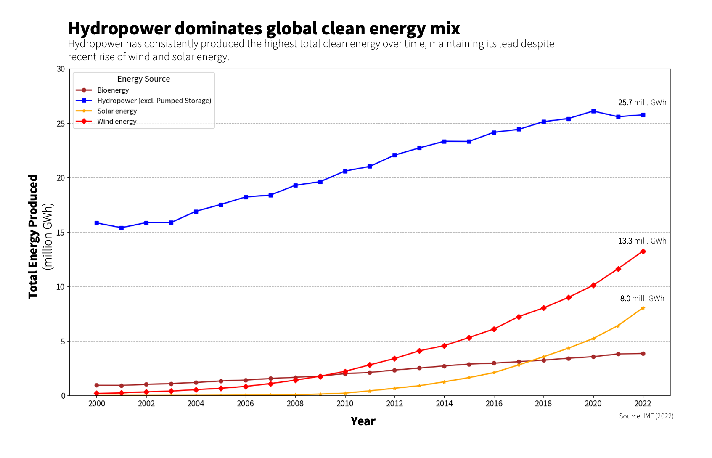
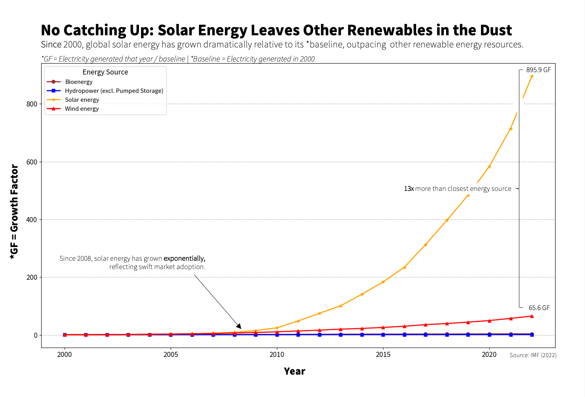

Hydropower is the global leading source of renewable energy
FOR the Proposition

Design Decisions and Rationale:
- Legend coloring and line markers (-1): I chose consistent colors and line markers for this line chart and the next one to further drive home that the line charts readers see are the "same". This is to further lessen the chance of readers to notice the difference in axis later on.
- Global Line Chart (-0.5):Global production of hydropower dominates, but after inspecting each continent, it turns out that these sources of power dominates in countries abundant in water. Regions like Africa produced more solar energy, and even on some cases, wind energy, at regions with high altitudes. So, choosing globally here does not represent the entire case-by-case scenario
- Annotations (2):The annotations in this chart is quite simple, with it only showing data points at the last year. I chose annotation to highlight the difference between hydropower and its recent competitors: wind and solar. But, it's not deceiving at all, hence the 2 score.
Hydropower dominates global clean energy mix

Design Decisions and Rationale:
- Legend coloring and line markers (-1): I chose consistent colors and line markers for this line chart and the last one to further drive home that the line charts readers see are the "same". This is to further lessen the chance of readers to notice the difference in axis before
- Starred captions under the title (-1.5): I intentionally wrote this caption at a smaller font and italized style in hopes of not attracting attention of readers towards the size axis change, as these captions explains how the changes have affected the chart
- Boldended captions: exponentially and 13x: (1) I intetionally boldened these parts of the caption to deliver the message towards the readers regarding the behaviour of solar energy relative to other sources.
Final Reflection
Quite frankly, this project was difficult. I explored multiple visualziations ranging from bar charts, pie charts and even area charts, and I could not make a decieving plot that would just make sense. More specifically, I couldn't make a deceiptive chart that's deceiptive enough and remained factual. I first settled on an area size chart to explain renewable energy generation globally, but I thought it would take away the attention from solar power's recent rise. Hence, I decided on doing both line charts (same type for both) since it was evident enough for readers to be easily persuaded or not if both charts are of the same type.
It surpised me that doing exploratory visualization took so long. I define ethical analysis and visualziation as doing something that remains factual but providing annotations that will be persuasive enough to drive home a different message.